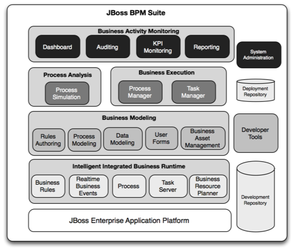
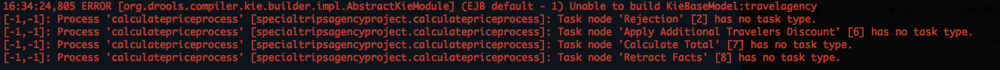

Workshop
Building a JBoss BPM Travel Agency
This first part of your summit lab is a sample of the online workshop where you can build the entire JBoss BPM Travel agency from scratch. Here today we will provide you with an incomplete project, with most of the rules and processes provided. You will build two (2) new data validation rules to test form data and part of a BPM Travel Agency process.
Let's get started on the rules and process as in the second hour you will be constructing some of the backend JBoss Fuse microservices to support integration to Flight and Hotel information.
Lab 01 - Startup JBoss BPM Suite
Lab Goal
To complete lab PDF and login to JBoss BPM Suite product

Start JBoss BPM Suite
- If you followed the initial lab PDF, you have installed the project in a console.
- Open another console window and start the JBoss BPM Suite:
$ ./target/jboss-eap-6.4/bin/standalone.sh
Errors you can expect to see in JBoss BPM Suite start up log, this is the sub-process that is not completed. You will be completing this sub-process soon...
Login to JBoss BPM Suite
- Business Central: http://localhost:8080/business-central
- user:
erics - password:
bpmsuite1!

- Racing Camel with BPM and Red Hat JBoss Fuse